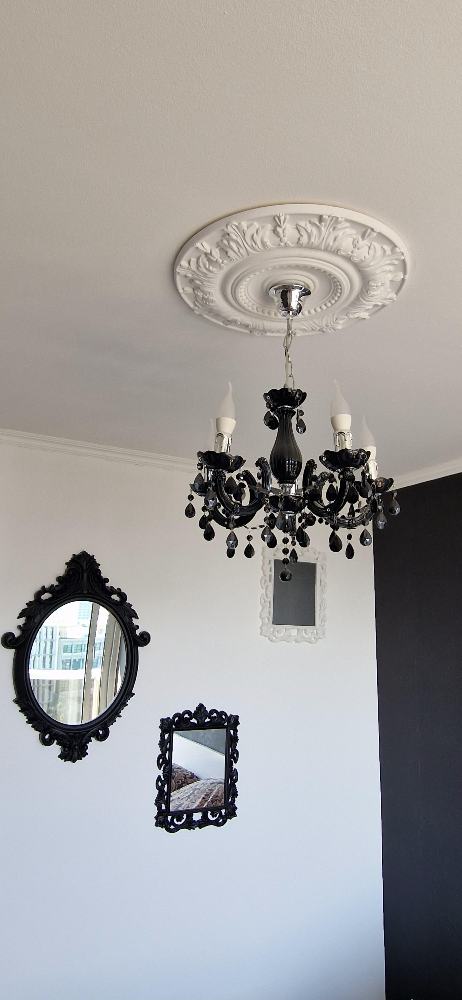
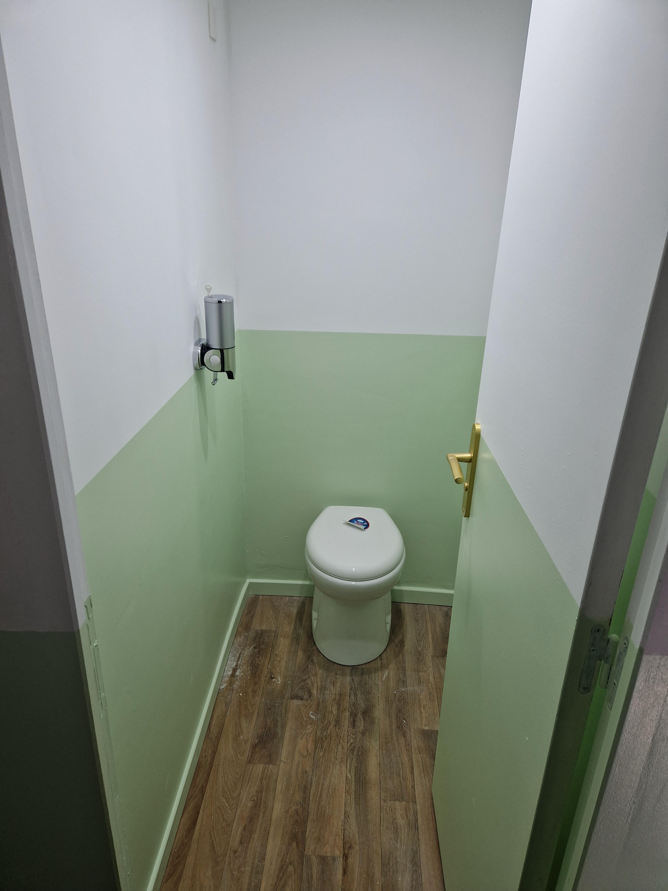
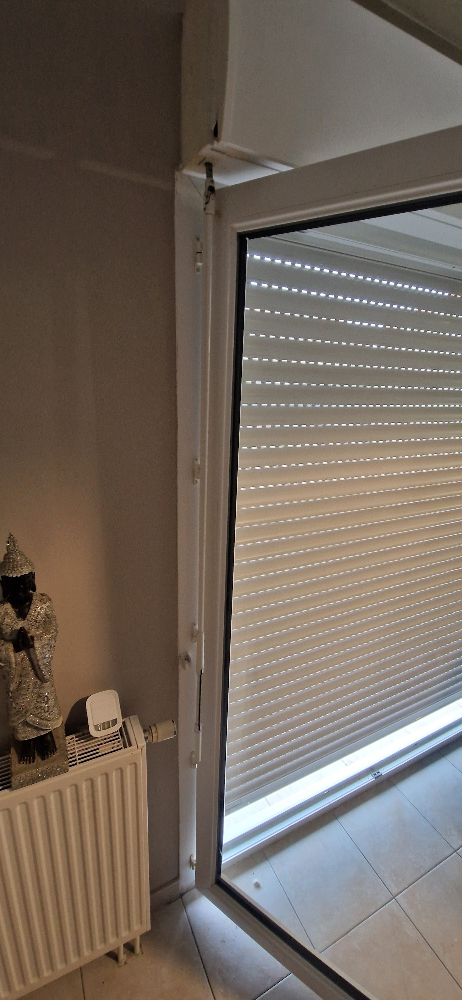
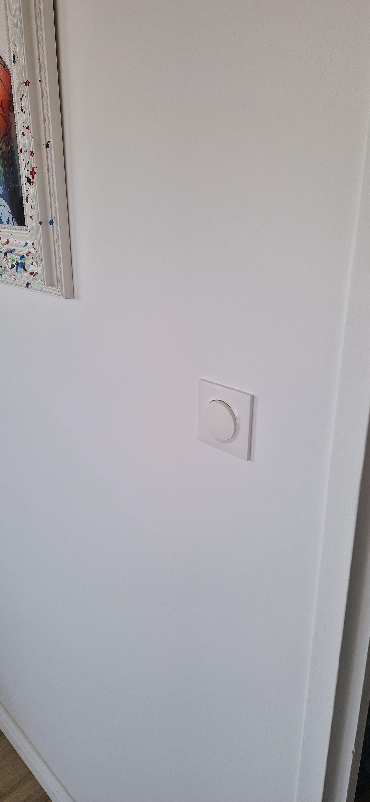
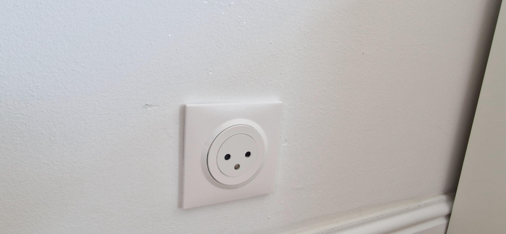

Nos réalisations
Réalisations d'ALLO FACTO
Electricité

Plomberie

Serrurerie
& Menuiserie

Réalisations d'ALLO FACTO
ELECTRICITE
- Recherche de pannes électriques
- Remplacement d’organes électriques (prises de courant, interrupteurs)
- Remplacement d’appliques
- Installation et remplacement de luminaires
- Installation et remplacement de détecteurs de fumée




Réalisations d'ALLO FACTO
PLOMBERIE
- Recherche de fuites
- Réparation de WC, remplacement de robinets, mécanismes et flotteurs d’arrêt de WC
- Débouchage de siphons
- Remplacement de joints d’étanchéité
- Installation de machines (lave-linge, lave-vaisselle)
Réalisations d'ALLO FACTO
SERRURERIE & MENUISERIE
- Remplacement de poignées de porte
- Remplacement de cylindres et serrures
- Réglage de gâches et paumelles
- Réglage et réparation de volets roulants, menuiseries
N’hésitez pas à me contacter pour tout autre besoin, ainsi que pour les tarifs.
Les prestations proposées ne constituent pas une liste exhaustive,
et je peux répondre sur mesure à vos demandes particulières.
Contact : 06.68.53.85.04 allo.facto76@gmail.com